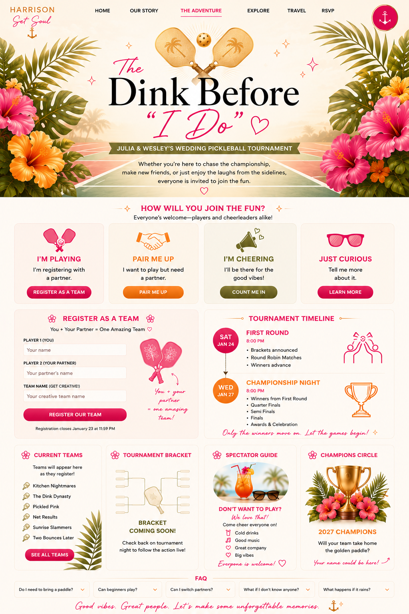

Claim your spot on the court
Register to play
Register alone and we’ll pair you, or add a teammate.
Pickleball FAQ
Can I register by myself?
Yes. Enter only your name and we’ll pair you with another player.
Do I need to bring equipment?
No. Paddles and balls will be available, though you are welcome to bring your own paddle.
When are the matches?
Opening rounds are Saturday, January 23 from 8–10 PM. Bracket winners return Wednesday, January 27 from 8–10 PM.
Do I need experience?
No. All experience levels are welcome. The goal is friendly competition and a lot of fun.